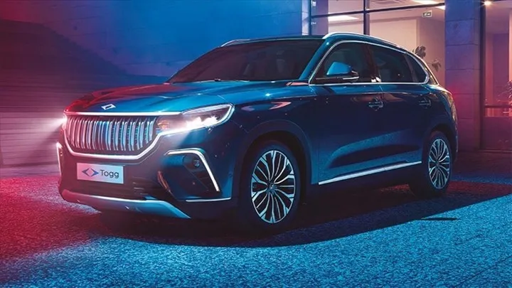

Kritik öneme sahip Türkiye'nin ilk batarya fabrikasının temeli atıldı: İşte detaylar
Türkiye'nin ilk batarya üretim tesisi Siro Batarya Fabrikası'nın temeli, Cumhurbaşkanı Recep Tayyip Erdoğan'ın katılımıyla birlikte bugün Bursa'nın Gemlik ilçesinde atıldı..
Türkiye’nin otomotiv sektörü için kritik öneme sahip olması beklenen Siro Batarya Fabrikası'nın temeli gerçekleştirilen tören eşliğinde atıldı. Siro Energy tarafından işletilecek olan tesiste elektrikli otomobillerin temel unsuru olan bataryaların üretimi gerçekleştirilecek. Siro Batarya Fabrikası'nda üretilecek olan modüller Togg’da kullanılacak. Ancak bu tesisin tek amacı Togg için üretim yapmak değil, aynı zamanda ihracat ile endüstride söz sahibi olmak.
Siro batarya fabrikası 2024’te tamamlanacak
Togg ve Çinli üretici Farasis Energy ortaklığında yüzde 50 yüzde 50 ortaklık ile 27 Eylül 2021’de kurulan Siro Energy, Bursa'nın Gemlik ilçesindeki Teknoloji Kampüsü'nde kurulacak olan batarya üretim tesisinin 2024 yılının sonuna kadar tamamlanması hedefleniyor. Fabrika tam kapasiteye ulaştığında yılda 350 bin araca yetecek kadar batarya üretimi gerçekleştirecek. Bu üretim kapasitesinin karşılığı ise 20 GWh olurken tam kapasiteye ise 2031’de ulaşılması hedefleniyor. Siro’nun 2032 yılı sonuna kadar 30 milyar TL yatırımla 2 bin 200 kişiye istihdam sağlayacağının da altı çiziliyor.Cumhurbaşkanı Erdoğan, Siro Batarya Geliştirme ve Üretim Kampüsü'nün 2024'te ilk üretimine başlayacağını söyledi.
30 milyar Avro katkı yapacak

Törende konuşan Siro Yönetim Kurulu Başkanı M. Gürcan Karakaş, Siro’nun batarya değer zincirini geliştirip Türkiye’ye her açıdan katma değer sağlayacağını belirterek, “10 yılda GSYH’ye toplam 30 milyar Avro’nun üzerinde, cari açığın azaltılmasına 10 milyar Avro’nun üzerinde, istihdama da 7 bin çalışanın üzerinde katkıda bulunacak. Maden üretiminden e-mobiliteye, sabit enerji depolamadan mikromobiliteye Siro’nun etrafında ortaya çıkacak ekosistem sayesinde 12 milyar Avro’nun üzerinde bir yatırım ve GSYH’ye 10 yılda 110 milyar Avro’nun üzerinde toplam bir değer yaratılacak. Yüzde 80’i aşan bir yerlilik oranıyla 22 bin nitelikli istihdamın da önü açılacak” şeklinde konuştu